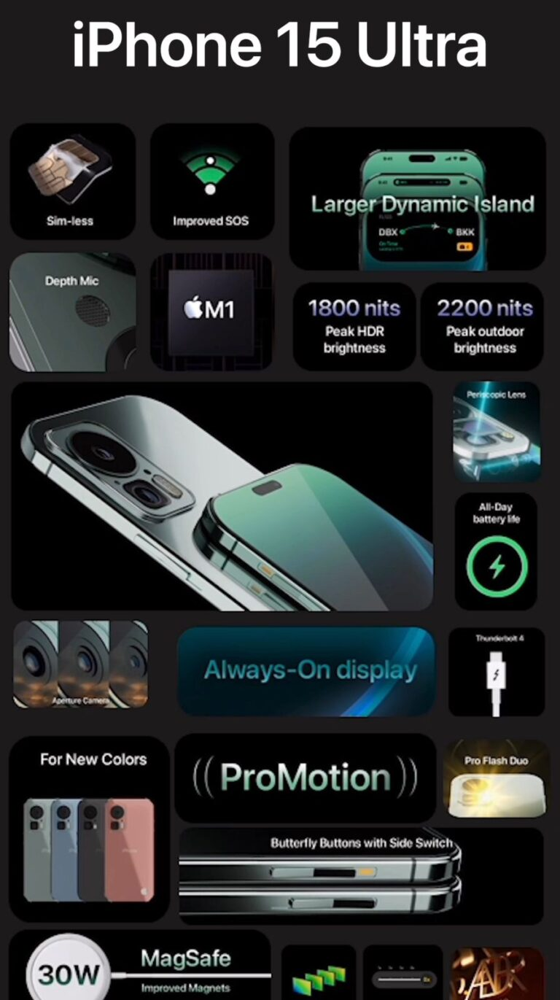
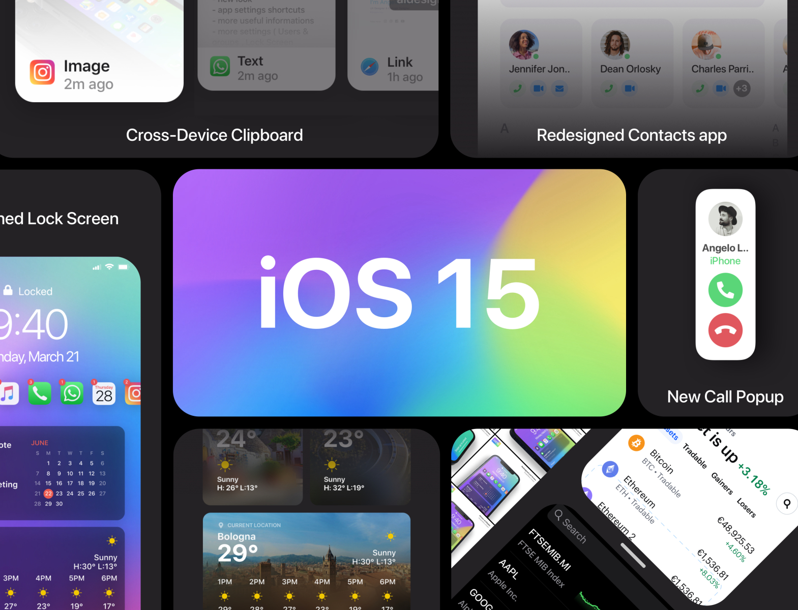
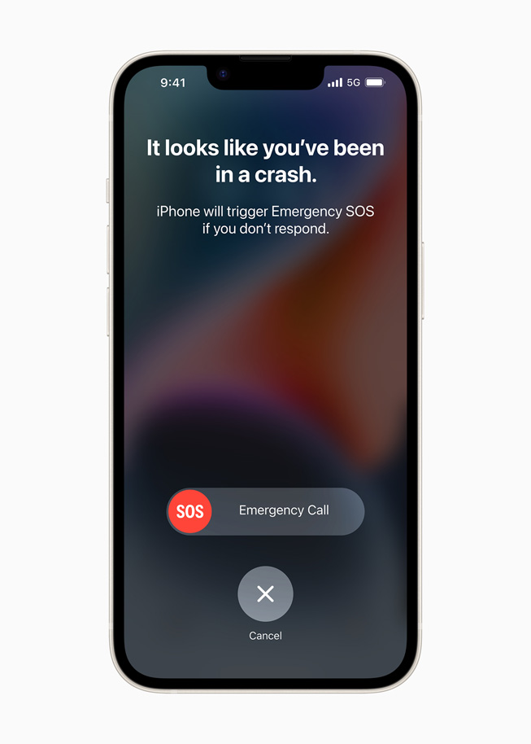
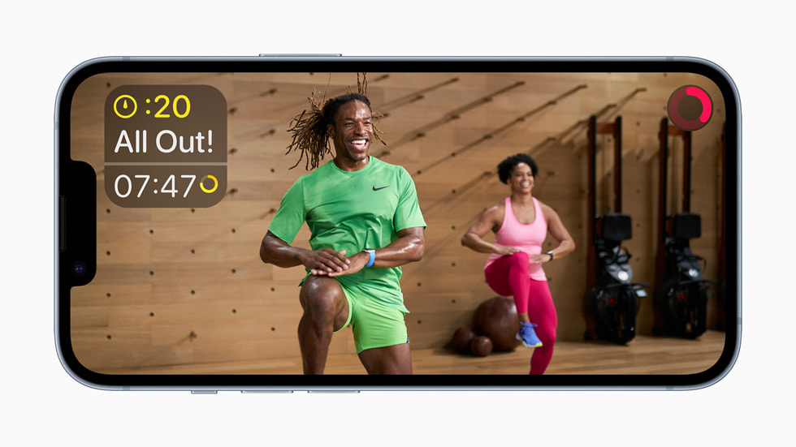

A Beautiful and Durable Design with Amazing Battery Life
022323
Available in the popular 6.1-inch size and a stunning new 6.7-inch size,2 iPhone 15 and iPhone 15 Plus feature a durable and sleek aerospace-grade aluminium design in five beautiful finishes. The larger display of iPhone 14 Plus is great for streaming movies and playing games, and iPhone 14 Plus boasts the best battery life ever in an iPhone.3 Both models have an updated internal design for better thermal performance, gorgeous Super Retina XDR displays with OLED technology that supports 1200 nits of peak HDR brightness, a 2,000,000:1 contrast ratio, and Dolby Vision.
iPhone 15 and iPhone 15 Plus also feature the durable Ceramic Shield front cover — exclusive to iPhone and tougher than any other smartphone glass — and are protected from common spills and accidents with water and dust resistance.4
iPhone 15 and iPhone 15 Plus are shown in midnight.
iPhone 15 and iPhone 15 Plus are shown in blue.
iPhone 15 and iPhone 15 Plus are shown in starlight.
iPhone 15 and iPhone 15 Plus are shown in purple.
iPhone 15 and iPhone 15 Plus are shown in PRODUCTRED.
specifications

Powerful Camera Upgrades Enabled by Photonic Engine
iPhone 14 and iPhone 14 Plus introduce a new standard for photo and video capture with a new 12MP Main camera featuring a larger sensor and larger pixels, a new front TrueDepth camera, the Ultra Wide camera to capture more of a scene, and Photonic Engine for a giant leap in low-light performance.
action mode off & action mode off

Crash Detection and Emergency SOS via Satellites
The entire iPhone 15 lineup introduces groundbreaking safety capabilities that can provide emergency assistance when it matters most. With a new dual-core accelerometer capable of detecting G-force measurements of up to 256Gs and a new high dynamic range gyroscope, Crash Detection on iPhone can now detect a severe car crash and automatically dial emergency services when a user is unconscious or unable to reach their iPhone. These capabilities build on existing components, like the barometer, which can now detect cabin pressure changes, the GPS for additional input for speed changes, and the microphone,5 which can recognize loud noises typified by severe car crashes. Advanced Apple-designed motion algorithms trained with over a million hours of real-world driving and crash record data provide even better accuracy. When combined with Apple Watch, Crash Detection seamlessly leverages the unique strength of both devices to get users help efficiently. When a severe crash is detected, the emergency services call interface will appear on Apple Watch, as it is most likely to be in closer proximity to the user, while the call is placed through iPhone if it is in range for the best possible connection.6
A15 Bionic: A Powerhouse with a 5-Core GPU
A15 Bionic brings incredible performance to iPhone 15 and iPhone 15 Plus. Still faster than all the competition at any price, the 5-core GPU enables even smoother graphics for video apps and high-performance gaming, and powers incredible camera features like Photonic Engine and Cinematic mode, all while delivering impressive battery life, and protecting privacy and security with the Secure Enclave. The 6-core CPU handles demanding tasks smoothly and efficiently, and the 16-core Neural Engine is capable of 15.8 trillion operations per second, enabling even faster machine learning computations for features in iOS 16 and third-party app experiences.

Apple Fitness+ for All iPhone Users
iPhone users will have access to the entire service featuring over 3,000 studio-style workouts and meditations, all led by a diverse and inclusive team of trainers. Fitness+ users will see onscreen trainer guidance and interval timing, and estimated calories burned will be used to make progress on their Move ring. Fitness+ will be fully integrated with the Fitness app coming with iOS 16 and located in the middle tab, where users can stay motivated to close their Move ring through awards, activity sharing, and more. Users only need an iPhone to sign up, and can then experience Fitness+ on iPhone, iPad, and Apple TV.
iPhone and the Environment
iPhone 15 and iPhone 15 Plus are designed to minimise their impact on the environment, including antenna lines that use upcycled plastic water bottles that have been chemically transformed into a stronger, higher-performance material. iPhone 14 models also use 100 percent recycled rare earth elements in all magnets, including those used in MagSafe, and 100 percent recycled tungsten in the Taptic Engine. Both models also include 100 percent recycled tin in the solder of multiple printed circuit boards, and 100 percent recycled gold in the plating of multiple printed circuit boards and in the wire of all cameras. Fiber-based packaging does not use outer plastic wrap, bringing Apple closer to its goal of completely removing plastic from all packaging by 2025.
Today, Apple is carbon neutral for global corporate operations, and by 2030, plans to be 100 percent carbon neutral across its entire manufacturing supply chain and all product life cycles. This means that every Apple device sold, from component manufacturing, assembly, transport, customer use, charging, all the way through recycling and material recovery, will have net-zero climate impact.
our store locations
Pricing and Availability
iPhone 15 and iPhone 15 Plus will be available in midnight, blue, starlight, purple, and (PRODUCT)RED in 128GB, 256GB, and 512GB storage capacities.
Customers in Australia, Canada, China, France, Germany, India, Italy, Japan, Singapore, Spain, Thailand, the UAE, the UK, the US, and more than 30 other countries and regions will be able to pre-order iPhone 15 and iPhone 15 Plus beginning at 5 a.m. PDT on Friday, September 9, with iPhone 14 availability beginning Friday, September 16, and iPhone 14 Plus beginning Friday, October 7.
iPhone 15 will be available in Malaysia, Türkiye, and 20 other countries and regions beginning Friday, September 23.
Emergency SOS via satellite will be available starting in the US and Canada in November, and the service will be included for free for two years with the activation of iPhone 15 and iPhone 15 Plus.
iPhone 15 and iPhone 15 Plus are also available through Apple Authorised Resellers.12
Customers can get iPhone 15 for INR 79900 and and iPhone 15 Plus for INR 89900 from apple.com/in/store and through Apple Authorised Resellers.
iOS 16 will be available as a free software update on Monday, September 12.
Customers who purchase iPhone 15 and iPhone 15 Plus will receive three free months of Apple Arcade with a new subscription.
Leather Wallet with MagSafe and iPhone 15 and iPhone 15 Plus Leather Cases will be available in five new colors: midnight, forest green, ink, umber, and orange. iPhone 15 and iPhone 15 Plus Clear Case and Silicone Cases will be available in midnight, storm blue, red, chalk pink, lilac, elderberry, succulent, and sunglow.
About Apple
Apple revolutionised personal technology with the introduction of the Macintosh in 1984. Today, Apple leads the world in innovation with iPhone, iPad, Mac, Apple Watch, and Apple TV. Apple’s five software platforms — iOS, iPadOS, macOS, watchOS, and tvOS — provide seamless experiences across all Apple devices and empower people with breakthrough services including the App Store, Apple Music, Apple Pay, and iCloud. Apple’s more than 100,000 employees are dedicated to making the best products on earth, and to leaving the world better than we found iApple revolutionised personal technology with the introduction of the Macintosh in 1984. Today, Apple leads the world in innovation with iPhone, iPad, Mac, Apple Watch, and Apple TV. Apple’s five software platforms — iOS, iPadOS, macOS, watchOS, and tvOS — provide seamless experiences across all Apple devices and empower people with breakthrough services including the App Store, Apple Music, Apple Pay, and iCloud. Apple’s more than 100,000 employees are dedicated to making the best products on earth, and to leaving the world better than we found i
Every iPhone 15 and iPhone 15 Plus (PRODUCT)RED purchase now contributes directly to the Global Fund to combat pandemics like COVID‑19 and AIDS.
The display has rounded corners that follow a beautiful curved design, and these corners are within a standard rectangle. When measured as a standard rectangular shape, the screen is 6.06 inches (iPhone 15), or 6.68 inches (iPhone 15 Plus) diagonally. The actual viewable area is smaller.
All battery claims depend on the cellular network, location, signal strength, feature configuration, usage, and many other factors; actual results will vary. The battery has limited recharge cycles and may eventually need to be replaced. Battery life and charge cycles vary by use and settings. Battery tests are conducted using specific iPhone units. See apple.com/in/batteries and apple.com/in/iphone/compare for more information.
iPhone 15 and iPhone 15 Plus are splash-, water-, and dust-resistant, were tested under controlled laboratory conditions, and have a rating of IP68 under IEC standard 60529 (maximum depth of 6 meters for up to 30 minutes). Splash, water, and dust resistance are not permanent conditions. Resistance might decrease as a result of normal wear. Do not attempt to charge a wet iPhone; refer to the user guide for cleaning and drying instructions. Liquid damage is not covered under warranty.
The microphone is turned on only when driving is detected; this can be triggered by Bluetooth, CarPlay, or speed. All data is processed on the device and discarded after a crash event has been detected, unless a user has opted into sharing their data to improve Crash Detection. Only the sound level is shared with Apple, not the raw audio.
Crash Detection is designed for four-wheel passenger vehicle crashes with certain mass, G-force, and speed profiles consistent with severe, life-threatening crashes. It was designed for severe, life-threatening, high-impact front and rear, side-swipe, T-bone, and rollover crashes. Crash Detection is available worldwide on iPhone 15, iPhone 15Plus, iPhone 15 Pro, iPhone 15 Pro Max, Apple Watch Series 8, Apple Watch SE, and Apple Watch Ultra.
Emergency SOS via satellite was designed for use in open spaces with a clear line of sight to the sky. Performance may be impacted by obstructions such as trees or surrounding buildings. iPhone will continue to operate under normal temperature conditions.
A data plan is required. 5G, Gigabit LTE, VoLTE, and Wi-Fi calling are available in select markets and through select carriers. Speeds are based on theoretical throughput, and vary based on site conditions and carrier. For details on 5G and LTE support, customers can contact their carrier or visit apple.com/in/iphone/cellular.
Users can edit a message for up to 15 minutes after sending it and can unsend a message for up to two minutes after sending it. Users can make up to five edits to a given message, and recipients will be able to see a record of edits made to the message.
My support
Get up-to-date information about your Apple products including cover, repairs and much more.